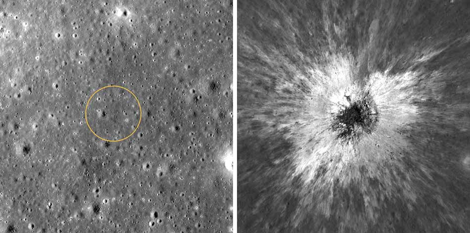
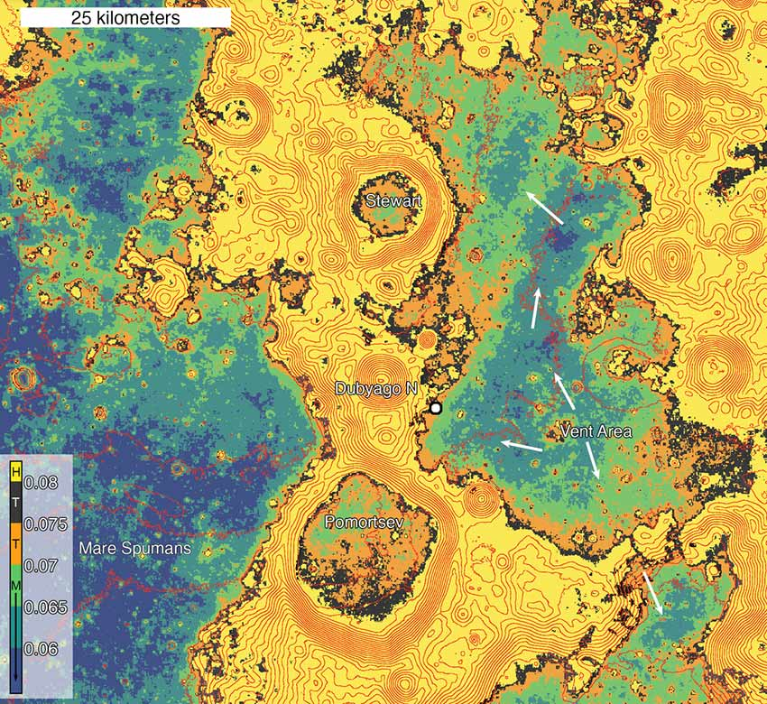
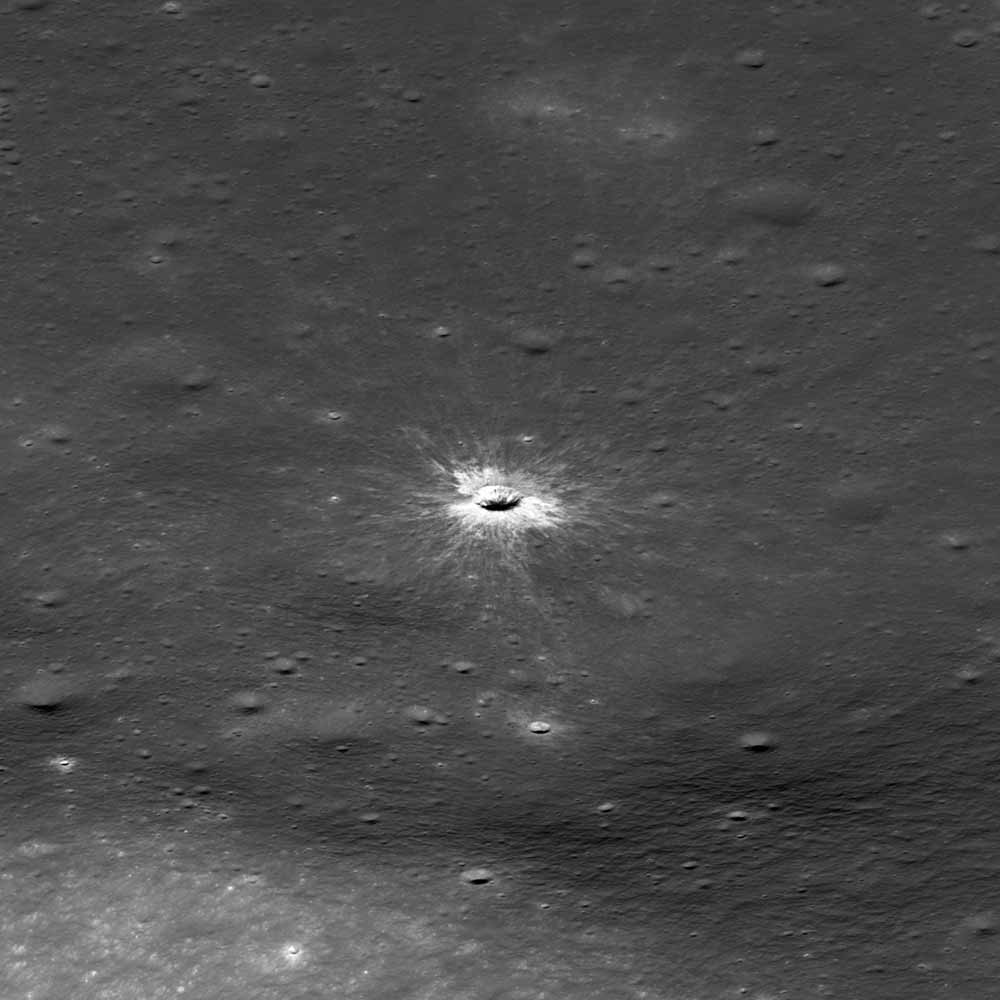

شناسایی یک دهانه برخوردی تازه بر روی ماه
نویسنده: پدرام محمدطاهری
تقریبا کسی را سراغ نداریم که از دیدن ماه و دهانههای برخوردی آن از پشت تلسکوپ به شگفتی نیفتد. هنوز هم حتا با گذر سالها رصد آسمان این دهانههای برخوردی برایمان جذاباند و محلی هستند برای خیالپردازی. این دهانههای عظیم که وسعت آنها گاهی به بزرگی یک شهر یا یک استان میرسد اکثرا از چند میلیون سال تا حدود 4 میلیارد سال قدمت دارند و یادگار دوران پربرخورد منظومه شمسی به شمار میروند و درست مانند یک فسیل ما را به گذشتههای پر هرج و مرج سامانه خورشیدیمان میبرند. اما دانشمندان به تازگی موفق شدهاند یک دهانه برخوردی را بر روی ماه شناسایی کنند که به تازگی شکل گرفته است و میتوانیم آن را بزرگترین دهانه برخوردی یک قرن اخیر بنامیم.
واقعیت این است که سامانه خورشیدی کنونی ما نسبت به روزهای اولیهاش مکانیست به مراتب آرامتر و کمبرخوردتر. از این روی برخوردهای ویرانگر در این روزها پدیدهای بسیار کمیاب است. بنابراین احتمال این که در دوران معاصر شاهد برخوردهایی چنین و به تبع آن شکلگیری دهانههای عظیمِ تازه بر روی ماه باشیم بسیار اندک است. اما دانشمندان به تازگی اعلام کردهاند که در بهار سال 2024 ماه به دنبال برخوردی با یک سیارک یا احتمالا دنبالهدار ، صاحب یک دهانه برخوردی تازه شده که میتوان آن را بزرگترین دهانه برخوردی تازه شکلگرفته در منظومه شمسی که توسط بشر معاصر ثبت شده به حساب آوریم. این دهانه 222 متر وسعت دارد و حاصل برخورد با جرمی در ابعاد یک ساختمان 3 تا 6 طبقه است. پیش از این بزرگترین دهانه برخوردی تازه و معاصر ثبت شده تنها 70 متر وسعت داشت.
این دهانه برخوردی که در لبه شرقی ماه قرار دارد به نام «تام مکگچین» فقید نامگذاری شده است. تام مکگچین زمینشناس و دانشمند علوم سیارهای یکی از تاثیرگذارترین چهرههای زمینشناسی ماه است. مکگچین درک ما را از مکانیک برخوردها در سطح ماه و سایر اجرام مشابه و به علاوه آتشفشانهای کهن ماه شکل داد و در انتخاب محل فرود آپولو 17 نیز یاری رساند.
شناسایی این دهانه برخوردی که در قالب دو مقاله در نشریه ساینس ادونسز و خلاصهای از آن در نشریه آسترونومی به آن پرداخته شده توسط یکی از اعضای تیم مدارگرد شناسایی ماه (Lunar Reconnaissance Orbiter) به صورت تصادفی اتفاق میافتد. رابرت واگنر متخصص پردازش تصاویر در تیم اِل آر او اوایل پاییز سال 2025 مشغول مرور دستی آرشیو تصاویر دوربین میدان دیدِ باز این مدارگرد بود که ناگهان متوجه یک لکه روشن در عکس آرشیوی میشود که توسط حلقهای تاریک احاطه شده است. این لکه به عنوان یک محل احتمالی برخورد در نظر گرفته میشود.
مدارگرد شناسایی ماه یا به طور خلاصه ال آر او که از سال 2010 در حال فعالیت است قادر است هر سی روز یکبار از سراسر ماه تصویربرداری کند و این به معنی دسترسی به آرشیوی زمانبندی شده از ماه است. مقایسه عکسهای جدید رسیده از ماه با عکسهای قدیمیتر میتواند کوچکترین تغییر جدیدی در سطح ماه را آشکار کند. تاکنون به همین روش بیش از 1000 دهانه برخوردی تازه به ثبت رسیده است. دهانهای که واگنر شناسایی میکند درست به همین روش انجام میشود. یعنی مقایسه یک عکس جدید با عکس آرشیوی و جستوجو برای یافتن کوچکترین تفاوت. این نقطه مرموز دانشمندان را ترغیب میکند که در گذرهای بعدی مدارگرد از فراز دهانه تازه شکلگرفته ، اینبار از دوربین میدان دیدِ بسته مدارگرد استفاده کنند تا تصویری واضحتر با بزرگنمایی بیشتر از محل برخورد به دست آید.

در این تصویر که ابعاد 925 متر در 925 متر از سطح ماه را پوشش میدهد میتوان بهوضوح دهانه برخوردی جدید و تاثیرات پیرامونی آن را در سطح ماه مشاهده کرد.
همانطور که گفته شد این اولین بار نیست که محققان متوجه یک دهانه برخوردی تازه بر روی ماه میشوند زیرا ماه اساسا فاقد جو است و کاملا بیدفاع. هر جرم فضایی سرگردان بهسادگی میتواند با سطح ماه برخورد کند و هیچ عامل جوی سرعت آن را کاهش نمیدهد. از این روی ماه سالانه صاحب دهانههای برخوردی جدیدی میشود که بسیاری از آنها به قدری کوچک هستند که حتا تجهیزات پیشرفتهای نظیر مدارگرد شناسایی ماه هم قادر به تشخیص آنها نیست. تخمین زده شده که هرساله 140 دهانه برخوردی جدید در ماه توسط این مدارگرد شناسایی میشود که ابعاد آنها چیزی حدود 9 متر است. اما دهانه مکگچین با قطر 222 متر یک مورد کاملا کمیاب است. مدلهای ایجاد دهانهها پیشبینی میکند که برخوردهایی نظیر مکگچین هر 132 سال یکبار به وقوع میپیوندند.
یک برخورد عظیم در مقابل چشمان جستوجوگر
این برخوردهای تازه و شناسایی به موقع آنها میتواند انباری از اطلاعات علمی را برای ما فراهم آورد. آنهم در دورانی که ما به ابزارهای بسیاری پیشرفته اندازهگیری مجهز هستیم. واقعیت این است که برخوردها با خود پدیدههای زمینشناختی شگفتانگیزی را به همراه میآورند که درک آنها برای ما مهم است. به عنوان مثال بین نوامبر 2025 تا فوریه 2026 محققان با کمک رادیومتر مدارگردِ ال آراو دمای منطقه برخورد را به طور متناوب اندازهگیری کردند و آن را با آرشیو دمایی همان نقطه پیش از برخورد به مقایسه گذاشتند و به نکته شگفتی پی بردند. محدودهای در حدود 7 کیلومتر به مرکزیت دهانه مکگچین دمایی کمتر از محیط اطراف را از خود نشان می داد چیزی در حدود 8 الی 9 درجه سانتیگراد سردتر از نواحی دیگر ماه در زمان شب!

حدود یک دهه است که با این پدیده آشنا هستیم پدیدهای که به «لکه سرد» موسوم است و راز آن به پوشش سطحی ماه برمیگردد. سطح رویی ماه و همچنین سطح سیاره خودمان زمین و حتا مریخ و بسیاری از سیارکها از لایهای ناهمگن ساخته شده که به رِگولیت مشهور است. رگولیت یک لایه ناهمگن از مواد مختلف مثل غبار، خاک ، خرده سنگ و موادی دیگر است که روی بستر سنگی جامد قرار میگیرد. رگولیت تقریبا تمام سطح ماه را پوشانده است و هرجا که قدم بگذارید رگولیتِ نسبتا متراکم را زیر پای خود احساس میکنید. زمانی که برخوردی با سطح ماه صورت میگیرد رگولیت موجود در مناطقِ پیرامونِ محلِ برخورد سست میشود و چگالیاش کاهش پیدا میکند. سست شدن رگولیت باعث میشود دیگر نتواند مانند قبل گرمایی که در زمان روزِ ماه در خود ذخیره کرده را به آرامی تخلیه کند بلکه خیلی زودتر از همیشه گرمای خود را در زمان شب از دست میدهد و برای همین نسبت به رگولیتهای دورتر از محل برخورد خیلی سریعتر سرد میشود و به همین دلیل در نقشههای دمایی از سطح ماه ما شاهد لکههای سرد در سطح ماه هستیم.
پدیده لکه سرد یک پدیده کوتاهمدت است یعنی قرار نیست تا ابد مناطق برخوردی تازه، دمای کمتری نسبت به سایر نقاط ماه در هنگام شب نشان دهند. خیلی زود محو میشوند و اثری ازشان باقی نمیماند. بیشتر لکههای سردی که تاکنون کشف شده در زمانی بوده که لکه در حال محو شدن بوده است اما مکگچین از این حیث متمایز است زیرا این بزرگترین لکه سردی است که درست در زمان شکلگیریاش توسط انسان معاصر مطالعه شده.

در مقاله منتشر شده در مورد شناسایی مکگچین محققان به تخمین جالبی اشاره میکنند که اهمیت لکههای سرد را برای ما روشن میسازد. براساس این مقاله که با کمک مدلهای رایانهای انجام شده هر تکه از سطح ماه حدودا هر 10 میلیون سال وارد یک لکه سرد میشود و 2 تا 5 سانتیمتر از رگولیت رویی آن سست میگردد. این آهنگ تغییرات با آهنگ پدیدهای موسوم به «شخمخوردگی برخوردی» یعنی زیر و رو شدن خاک درون لبه دهانهها ، همارز است و نشان میدهد که لکههای سرد عاملی مهم هستند برای شکل دادن به سطح ماه.
خاکی که روزی بر آن قدم خواهیم زد
احتمالا اگر برای ساختن یک سازه عظیم یا یک مدرسه بر روی زمین برنامهای داشته باشیم اولین قدم آزمایش خاک و رگولیتی است که قرار است روی آن سازه بنا شود. شاید روزی آنچه که امروز از طریق مطالعه خاک ماه گردآوری میکنیم در آینده و برای آیندگانی که قرار است در ماه یا سیارهای نظیر مریخ سکنی گزینند دارای اهمیت بسیاری باشد.
ماه همچنان نزدیکترین آزمایشگاه زمینشناسی سیارهای به ماست که میتوانیم آن را برای آیندگان کاوش کنیم و همچنان محل شگفتی و آگاهی ما در مورد منظومه شمسی و سیاره حیاتبخشمان زمین.
مکگچین را نمیتوانیم از پشت تلسکوپ از روی زمین تشخیص دهیم اما صدها دهانه عظیمتر منتظر شماست تا با ابتداییترین ابزار رصدی خود به سراغ آن بروید و به کاوش بصری ماه بپردازید. دستکم ماه خانه آینده ماست کسی چه میداند شاید دهانهای که امشب رصدش میکنید روزی محل زندگی نسلهای بعدی ما باشد.
https://www.astronomy.com/science/scientists-spot-a-new-crater-on-the-moon/